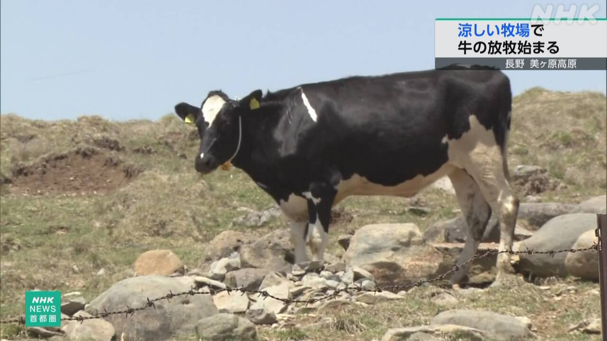

最新ニュース
1️⃣ 暑い外で働く人のために「トイレがある車」を用意した
まだ5月ですが、もう夏のようにとても暑い日が続いています。
東京の立川市にある警備会社では、建物や道を作っている場所など、外で仕事をしている人がたくさんいます。暑い日は、熱中症にならないように、よく水を飲むことが大切です。
会社では、外で働く人がトイレのことを心配しないで水を飲むことができるように、トイレがある車を用意しました。
車は3台あります。毎日みんなが働いている場所に来ます。この車が来ると、みんなはトイレを使ったり車にある冷たい水を飲んだりして休みます。
会社の社長は「車などにお金はかかりますが、働く人の体が大切です」と話しています。
2️⃣ 長野県 涼しい山の上で牛の放牧が始まった

長野県の美ヶ原高原にある牧場は、高い山の上にあって、夏でも涼しい所です。
いま、暑さに弱い牛の「放牧」が始まっています。放牧は、広いところで自由にさせることです。
18日は、牛を育てている人が13頭の牛を車で連れてきました。牛たちは、車から降りると、すぐに牧場を元気に走りました。
牧場の人によると、牛は涼しい場所で、よく食べて大きく育つそうです。
これから来月の終わりまでに250頭の牛が来て、10月まで牧場にいる予定です。
3️⃣ リチウムイオン電池を使った商品の火事が増えている
最近、リチウムイオン電池を使った商品の火事が増えています。
東京消防庁によると、東京では去年380件※ぐらいあって、今まででいちばん多くなりました。
特にモバイルバッテリーから火が出ることが多くなっています。18日は、電車の中で、客がかばんに入れていたモバイルバッテリーから火が出て、近くにいた女性が軽いけがをしました。
スマートフォンや電動アシスト自転車から火が出たこともあります。
リチウムイオン電池は、あつい場所に置いたり落としたりすると火が出る危険があります。東京消防庁は、夏は特に気をつけるように言っています。
※速報値で382件
4️⃣ トイレなどをつくる会社LIXIL 「商品の値段を上げる」
家のトイレやキッチンなどをつくっている会社「LIXIL」は、商品の値段を上げると言いました。アメリカなどとイランの戦いが始まってから、材料や物を運ぶために払うお金が高くなっているためです。
会社によると、8月から10月に注文を受ける商品から値段を上げる予定です。トイレが13%ぐらい、キッチンが10%ぐらい上がります。家の壁や屋根も13%ぐらい上がると言っています。
会社は「今までと同じようにいいものをつくるため、値段を上げることにしました」と言っています。
- 〜ている / 〜でいる
- 〜ように
- 〜ても / 〜でも
- 〜など
- 〜や〜など
- 〜ならない
- 〜こと
- 〜になる
- 〜ないで
- 〜ことができる
- 〜がある / 〜がいる
- 〜ところ
- 使役 (〜させる / 〜せる)
- 〜から
- 〜そうだ
- 〜によると
- 〜予定
- 〜まで
- 〜までに
- 〜から〜まで
- 〜予定だ
- 〜くらい / 〜ぐらい
- 〜中
- 〜たり〜たりする
- 〜ため
- 〜てから
- 〜ため(に)
- 〜ことにする
vebaev.github.io
Generated: 2026-05-19 16:21:57 UTC